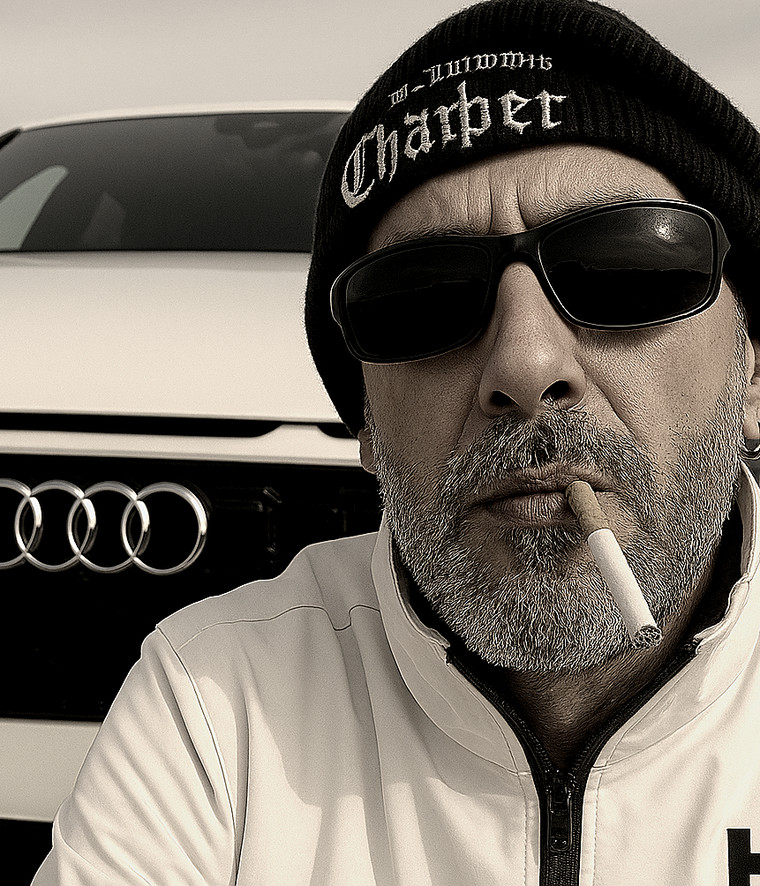

Musicien · Auteur-compositeur · Artiste
Du fond du cœur. Pour la vie.
Suite↓
Des chansons vraies. Des émotions vraies.
Je vis à Marbourg, en Allemagne, et je joue de la guitare et du clavier. La musique m’accompagne depuis toujours ; j’écris mes propres chansons depuis 2023. Mes textes travaillent des expériences personnelles, des pertes — mais aussi l’espoir.
J’enregistre mes parties moi-même. Toutes les notes ne tombent pas juste ; l’IA m’aide à retoucher. Les textes sont les miens.
Contact
Pour toute demande, concert, collaboration — ou si l’une des applications coince.